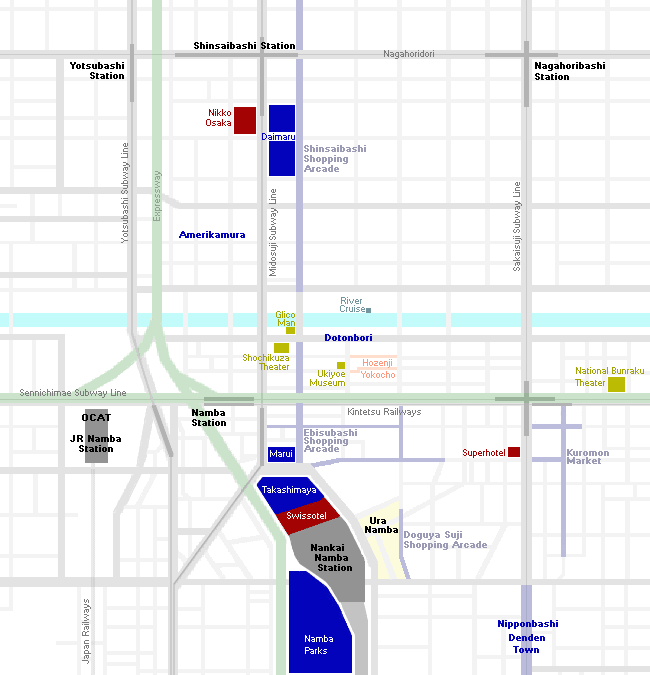

Minami(Namba)
ミナミ

Located around Namba Station, Minami (ミナミ, "South") is one of Osaka's two major city centers. It is the city's most famous entertainment district and offers abundant dining and shopping choices. The district is easily accessible as it is served by three train companies as well as three subway lines and a highway bus terminal. The other major city center is Kita (キタ, "North") which is located around Osaka and Umeda stations.
